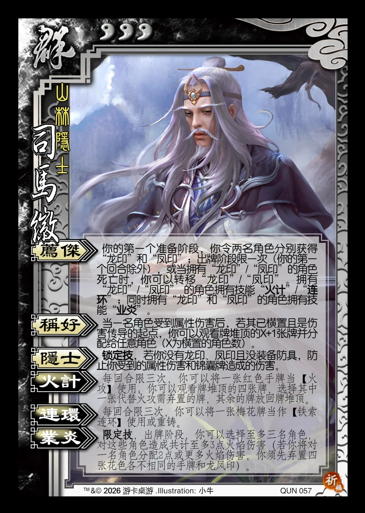

点击卡面查看大图
群
司马徽
♥3山林隐士
荐杰
你的第一个准备阶段，你令两名角色分别获得“龙印”和“凤印”；出牌阶段限一次（你的第一个回合除外），或当拥有“龙印”/“凤印”的角色死亡时，你可以转移“龙印”/“凤印”。拥有 “龙印”/“凤印” 的角色拥有技能“火计”/“连环”；同时拥有“龙印”和“凤印”的角色拥有技能“业炎”。
称好
当一名角色受到属性伤害后，若其已横置且是伤害传导的起点，你可以观看牌堆顶的X+1张牌并分配给任意角色（X为横置的角色数）。
隐士锁定技
锁定技，若你没有龙印、凤印且没装备防具，防止你受到的属性伤害和锦囊牌造成的伤害。
火计衍生
每回合限三次，你可以将一张红色手牌当【火攻】使用；你可以观看牌堆顶的四张牌，选择其中一张代替火攻需弃置的牌，其余的牌放回牌堆顶。
连环衍生
每回合限三次，你可以将一张梅花牌当作【铁索连环】使用或重铸。
业炎限定技衍生
限定技，出牌阶段，你可以选择至多三名角色，对这些角色造成共计至多3点火焰伤害（若你将对一名角色分配2点或更多火焰伤害，你须先弃置四张花色各不相同的手牌和龙凤印）。